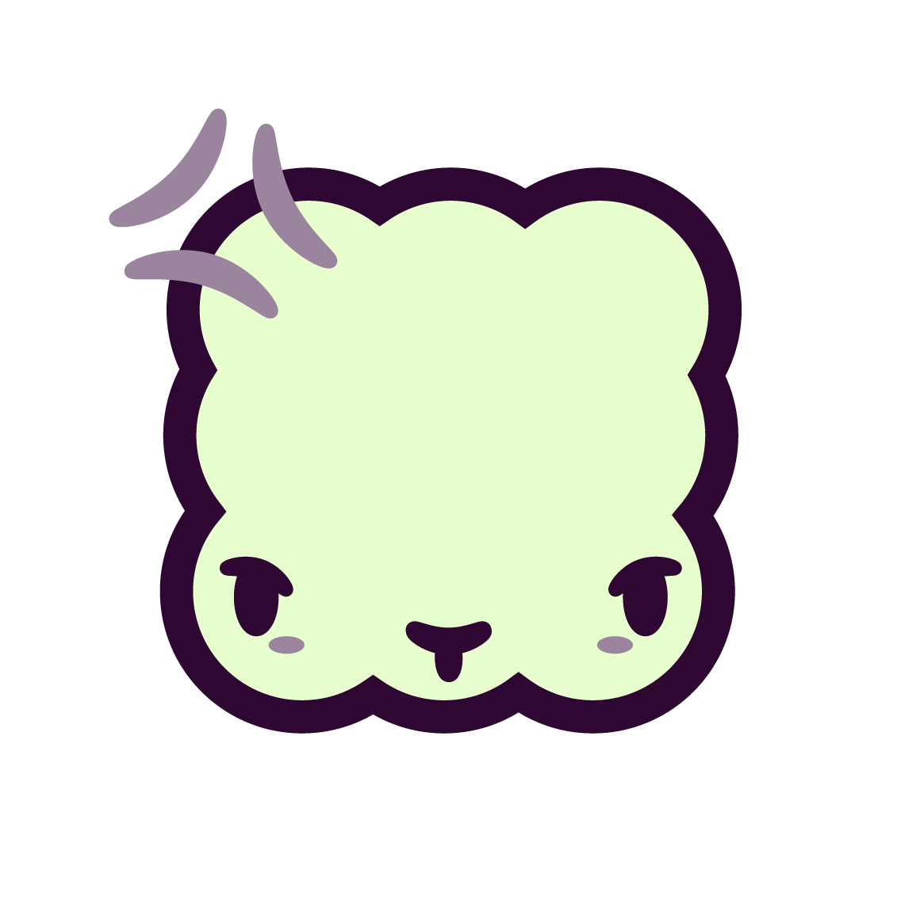

Persistent storage
await ctx.kv.set("saved-text", window.getSelection().toString());
const savedText = await ctx.kv.get("saved-text");

Browser Lambdaskv (key-value) persistent
browser storage across sites
Secrets for tokens
and sensitive data
Run other lambdas —
also on other tabs
Create, control
and destroy tabs
Ergonomic multi-paradigm
arg parsing
await ctx.kv.set("saved-text", window.getSelection().toString());
const savedText = await ctx.kv.get("saved-text");
const token = await ctx.secrets.get("API_TOKEN");
await fetch("/api/me", { headers: { Authorization: `Bearer ${token}` } });
await ctx.run("self-destruct --sec 30");
await ctx.tabs.new("https://example.com").run("self-destruct --sec 30");
const tab = await ctx.tabs.new("https://example.com");
await tab.focus(); await tab.close();
// greet Ada -v --tone=friendly
const { 0: name, verbose, tone } = ctx.args.all({ v: "verbose" });